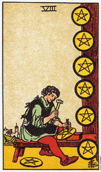

【关键词】 技能 勤劳 工作
图中一名男子正专注的执锤雕刻星币，显然，他已经干了很长时间了，已经完成了7 枚，第8枚眼看也快完成了。他为了能更专注的工作，搬离了背后远处的城镇，以便能更集中留意力。星币八象征着勤奋工作，注重细节。
推测：星币八通常暗示推测者要集中精力去处理眼前的急切的事务，同时，此牌也鼓舞推测者付出百分之二百的汗水去从事感爱好的事物。
星币八暗示对某人或某种状况的承诺。
星币八画的是一个工匠。他专心的雕琢一颗星币，另外一颗放在他脚边，等着他训练有素的巧手。六颗悬挂在墙上的星币象征他过去的成就。远处的背景可以看到一座城镇，这是产品完成之后贩售或交易的地方。
这张牌暗示对一个人或一种状况的深度承诺。背景城镇和星币四中的城镇是同一个。在四当中，你的焦点是钱，而现在你则着重于你的技巧以及如何变得更精炼。让技艺更上层楼可以透过不懈的努力，或进一步的学习。
在星币八当中，这个工匠知道城镇里面需要的是什么，知道材料的品质和可塑性，且知道他想创造些什么东西。8对于做生意而言是一个很有利的数字，也是长久以来中国商人所偏好的一个数字。他也是一个和运用个人力量和内在动力有关的数字，这可由大阿尔克纳牌的8是张代表力量的牌得到印证。(亚瑟*维特根据命理学将力量列为8，正义列为十一。其他塔罗牌的排列方式或许会略有出入。)
这张牌时说你已经在群体当中找到了自己的位置，并且在做适合你做的事情。你明白工作不应该是沉闷无味的，而是一种自我完成的机会。工作不仅只是为了填满你时间、胃或口袋，更重要的是让你的人生完整。
“工作是一种看得见的爱;”卡利尔*纪伯伦(Kahlil Cibran)在他的书《先知》(The Prophet)中写道：“你工作是为了配合地球以及这世界的灵魂。因为游手好闲会使你变得四时不分，并且偏离以庄严和光荣的敬谨之心驶向神的生命轨道。”星币八暗示，如果你并不喜欢目前的工作，那么就离开，去找你所喜欢的工作。最适合你的工作将是一种爱的劳动。
大体上的意义
星币八意味对某人或某种情况的承诺。在事业的分析上，这是一张表示成功的牌，意味你有机会在过去的成功上建立基础。在旅游的分析上，它暗示一趟和事业有关的旅行。在健康的分析方面，它表示决定要照顾身体。
这张牌也可以表示学习某一门课程，那将是你在某特殊领域成为专家。例如，假设你是一位心理学家，你可以选择完成一门诸如悲伤咨商、或工业工作场所关系等课程，以成为这些领域内的专家。或者假如你是一名职业音乐家，你可以选择学习另一种乐器，以开拓你的专业领域。
正位含义：
1.强烈的进取心，不甘于人后。
2.做事有条有理。
3.在技术上精玉求精。
4.正在研究学习的过程。
5.会自我激励，频繁用名人做事鞭策自己。
逆位含义：
1.无真本事，且虚荣得很。
2.放高利带，乏之为牟取利益不择手段。
3.本事用不到正经地方。
4.野心受挫折。
两性关系上的意义
星币八意味你对某个两性关系、满足需求及建立某种持久性的事物等，有着深刻的承诺。它也可能是指，你必须对两性关系的维系多加努力，以使它成长另一个及更好的阶段。它还可能表示举行婚礼，生养小孩，或当伴侣在养育小孩时，你在一旁支持他。
倒立的星币八
星币八倒立表示缺乏对眼前工作或状况的承诺。你想要得到许多的报酬，但却不怎么努力。或许是因为你缺少实现计划所需要的训练或技能。你需要再回到七的课题当中，去深思应如何发挥自己，以及真正想要达成的目标是什么。
在事业的分析上，星币八的倒立可能暗示你并不喜欢你的工作，然而却视它为迈向成功的一个步骤。无论如何，由于你并不喜欢它，所强调的只是想要成功，那么你将因工作而受苦，成功也只是短暂的，它也可能再告诉我们，工作是既沉闷且重复的，它无需技巧，也没有任何奖励。
在两性关系分析中，星币八的倒立时表示缺乏承诺。如果牌面上也出现了宝剑七，表示你已经对另外的事物许了更重要的承诺，例如另一段两性关系。
有时候星币八的倒立也意味着没有耐心、挫折、未实现的野心或草率的工作。